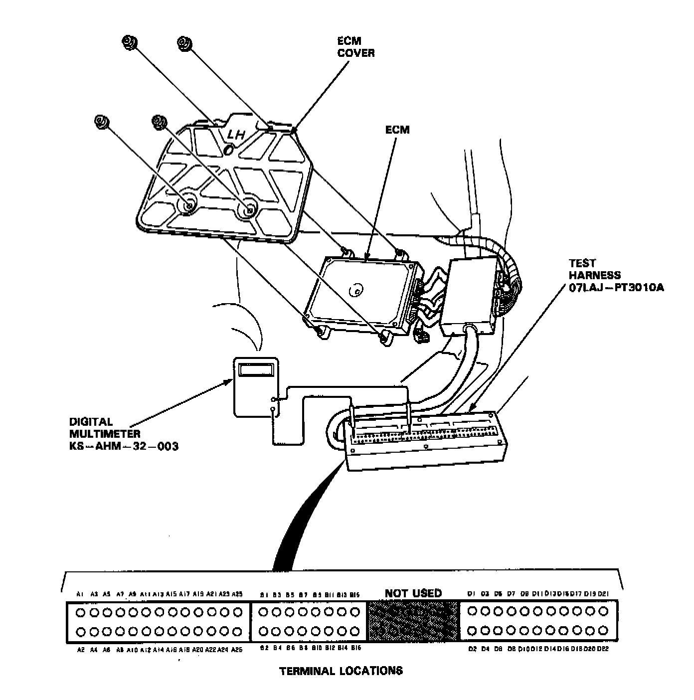

How to Troubleshoot Circuits At the ECM/PCM

PROCEDURE
If the inspection for a particular code requires the test harness, remove the right door sill molding and pull the carpet back to expose the ECM. Unbolt the ECM cover. Turn the ignition switch off and connect the test harness. Check the system according to the procedure described for the appropriate code(s).